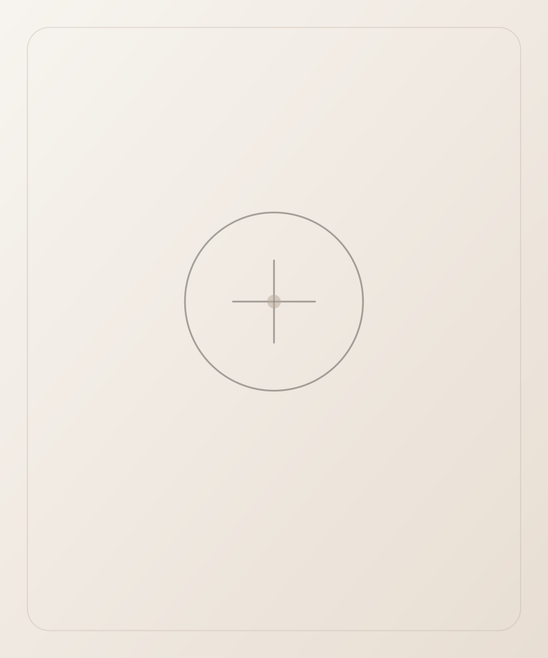

Diagnóstico, escuta e acompanhamento médico contínuo para tratar acne, manchas, rosácea, queda capilar e outras condições da pele, sempre a partir de uma avaliação individual.

Antes de qualquer indicação, a Dra. Daniele realiza uma escuta e investigação diagnóstica completa, para entender a origem de cada condição e definir, com base científica, o acompanhamento mais adequado para a saúde da sua pele.
Investigação da causa e tratamento personalizado para peles com acne ativa ou cicatrizes, unindo dermatologia clínica e cuidado individual.
Protocolo clínico para o clareamento de manchas, sempre investigando a causa antes de indicar qualquer procedimento.
Acompanhamento contínuo para reduzir vermelhidão, sensibilidade e crises, com escolha cuidadosa de produtos e proteção solar.
Avaliação da saúde do couro cabeludo e protocolos para fortalecer os fios e tratar alopécias.
Cuidado dermatológico contínuo para peles sensíveis e reativas, com foco em conforto e controle das crises.
Agende uma consulta e receba um diagnóstico completo, com acompanhamento médico especializado.
Agendar consulta